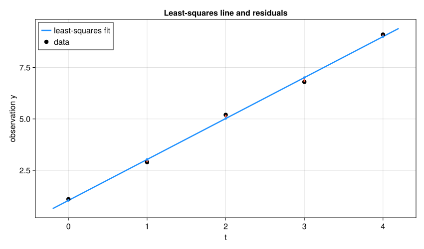

6. 最小二乗法とQR分解#
第5章では、正則な正方行列の方程式を解いた。では、未知数が2個なのに測定から5本の式が得られたらどうするか。実験や観測で得たデータは、普通は1本の直線上にぴったり並ばない。それでも、データ全体の傾向を表す直線を求めたい。この章では、直線近似から最小二乗法を導入し、その計算に使われるQR分解を学ぶ。
6.1. この章の目標#
データの直線近似を行列 \(Ac\approx y\) と書ける。
残差の二乗和を最小にする、という考え方を説明できる。
最小二乗解で残差が列ベクトルと直交することを確認できる。
QR分解を使うと三角行列の方程式に帰着できることを理解する。
列がよく似た問題や複数の右辺でQR分解が有効な理由を説明できる。
Juliaの
A \ yで最小二乗問題を解ける。
この章で使う線形代数（復習）
転置 \(A^T\)：行と列を入れ替えた行列。Juliaでは実行列に対して
A'と書ける（第3章）。内積と直交：\(u^Tv=\sum_iu_iv_i\)。これが0のとき \(u\) と \(v\) は直交するという（第3章の \((3,4)\) と \((-4,3)\) の例）。
単位ベクトル：長さ（2ノルム）が1のベクトル。\(v/\|v\|_2\) で作れる。
線形結合：\(c_0a_0+c_1a_1\) のように、ベクトルを定数倍して足したもの。\(Ac\) は \(A\) の列の線形結合である。
統計学の回帰分析で「傾き＝共分散／分散」という公式を学んだ人は、本章の後半でそれがQR分解から出てくることを確かめられる。
6.2. 直線をデータに当てはめる#
データ \((t_i,y_i)\) を
という直線で近似する。すべてのデータについて式を並べると
となる。左の行列を設計行列 \(A\)、係数を \(c\)、観測値を \(y\) とすれば \(Ac\approx y\) である。1行が1件の観測、1列がモデルに使う一つの項に対応する。切片も未知数なので、1を並べた列が必要になる。
using LinearAlgebra, Statistics
t = [0.0, 1.0, 2.0, 3.0, 4.0]
y = [1.1, 2.9, 5.2, 6.8, 9.1]
A = [ones(length(t)) t]
c = A \ y
yhat = A*c
r = y - yhat
println("切片 c₀ = ", round(c[1], digits=3))
println("傾き c₁ = ", round(c[2], digits=3))
println("予測値 = ", round.(yhat, digits=3))
println("残差 = ", round.(r, digits=3))
切片 c₀ = 1.04
傾き c₁ = 1.99
予測値 = [1.04, 3.03, 5.02, 7.01, 9.0]
残差 = [0.06, -0.13, 0.18, -0.21, 0.1]
方程式が5本、未知数が2個なので、一般にはすべてを同時にぴったり満たせない。そこで、残差
の二乗和
が最小になる \(c\) を選ぶ。これが最小二乗法である。正と負のずれをそのまま足すと打ち消し合うため、二乗してから足す。
6.3. 最小二乗解の幾何学#
\(Ac\) は、\(A\) の2本の列の線形結合である。これらの線形結合全体が作る部分空間を \(A\) の列空間という。最小二乗法は、列空間の中から \(y\) に最も近いベクトル \(A\hat{c}\) を探す問題とみなせる。
この「最も近い」という条件を調べよう。\(A\hat{c}\) における残差を \(r=y-A\hat{c}\) とする。また、\(q\) を \(A\) の列空間内の任意の単位ベクトルとする。\(q\) は、予測値 \(A\hat{c}\) が列空間内で動ける一つの方向を表す。
予測値を \(A\hat{c}+sq\) へ動かすと、新しい残差は \(r-sq\) となる。その二乗ノルムは、\(\|q\|_2=1\) より
となる。右辺は \(s=q^Tr\) のとき最小になる。しかし、\(A\hat{c}\) がすでに最も近い点なら、そこから動かない \(s=0\) が最小値を与えなければならない。したがって \(q^Tr=0\) である。
\(q\) は列空間内の任意の方向だったので、残差 \(r\) は列空間全体と直交する。特に \(A\) の各列とも直交するため
となる。これは求めた解を確認する方法の一つである。
println("残差の大きさ ||r|| = ", norm(r))
println("A' * r = ", A' * r)
println("直交条件の誤差 = ", norm(A' * r))
残差の大きさ ||r|| = 0.3271085446759226
A' * r = [2.6645352591003757e-15, 8.881784197001252e-16]
直交条件の誤差 = 2.808666774861361e-15
Show code cell source
# 初回のみ: import Pkg; Pkg.add("CairoMakie")
using CairoMakie
CairoMakie.activate!(type="svg")
set_theme!(Theme(fontsize=16, linewidth=2.5))
figure_dir = isdir("pic") ? "pic" : joinpath("..", "pic")
using LinearAlgebra
t_plot = [0.0, 1.0, 2.0, 3.0, 4.0]
y_plot = [1.1, 2.9, 5.2, 6.8, 9.1]
A_plot = [ones(length(t_plot)) t_plot]
c_plot = A_plot \ y_plot
fitted = A_plot*c_plot
dense_t = range(-0.2, 4.2, length=300)
fig_least_squares = Figure(size=(850, 500))
ax = Axis(fig_least_squares[1, 1];
xlabel="t", ylabel="observation y",
title="Least-squares line and residuals")
lines!(ax, dense_t, c_plot[1] .+ c_plot[2].*dense_t;
color=:dodgerblue, label="least-squares fit")
scatter!(ax, t_plot, y_plot; color=:black, markersize=12, label="data")
for i in eachindex(t_plot)
lines!(ax, [t_plot[i], t_plot[i]], [fitted[i], y_plot[i]];
color=:tomato, linewidth=3)
end
scatter!(ax, t_plot, fitted; color=:dodgerblue, markersize=7)
axislegend(ax; position=:lt)
save(joinpath(figure_dir, "least_squares_residuals.svg"), fig_least_squares)
fig_least_squares


図 6.1 赤い線分が残差である。最小二乗法は各点を必ず通る直線ではなく、これらの残差の二乗和を最小にする直線を選ぶ。#
6.4. 正規方程式#
直交条件へ \(r=y-Ac\) を代入すると
すなわち
が得られる。これを正規方程式という。未知数が2個なら、\(A^TA\) は2行2列なので、前章の方法で解ける。
c_normal = (A' * A) \ (A' * y)
println("正規方程式の解 = ", c_normal)
println("A\\yとの差 = ", norm(c_normal-c))
正規方程式の解 = [1.0400000000000023, 1.989999999999999]
A\yとの差 = 3.722145839155691e-15
正規方程式は最小二乗法の仕組みを理解するのに役立つ。\(A\) の列が線形独立なら \(A^TA\) は正定値（0でない任意の \(v\) に対して \(v^TA^TAv=\|Av\|_2^2>0\)）で、正則になるので、最小二乗解は一意である。ただし、実際の計算では A' * A をわざわざ作らず、A \ y またはQR分解を使うのが基本である。
なぜ正規方程式を第一選択にしないのか
\(A\) の列が線形独立なら、長方形行列の条件数を「最大の伸び率／最小の伸び率」と定義できる（Juliaの cond(A) で計算できる。理論は発展編の第12章で扱う）。このとき2ノルム条件数は \(\kappa_2(A^TA)=\kappa_2(A)^2\) となる。したがって \(A^TA\) を作ると、列がよく似た問題の感度を二乗して持ち込む。「式の導出には正規方程式、計算にはQR分解」と覚えておくとよい。
6.5. QR分解で解く#
\(m\geq n\) かつ \(A\in\mathbb{R}^{m\times n}\) の列が線形独立であるとする。\(A\) の列を、互いに直交する単位ベクトルへ整理したものを \(Q\in\mathbb{R}^{m\times n}\) とする。係数をまとめた上三角行列 \(R\in\mathbb{R}^{n\times n}\) を用いると
と分解できる。これがQR分解である。
QR分解の定義
より一般には、\(m \ge n\)の複素行列\(m \times n\)の任意の行列\(A\)に対して、\(m \times m\)のユニタリ行列\(Q\)と\(m \times n\)の上三角行列\(R\)が存在して、\(A=QR\)と分解できる。この場合の\(R\)は、上三角行列であるが、正方行列ではない。
\(m < n \)の場合は、\(A^T\)のQR分解を行うことで、同様に分解できる。
\(Q^TQ=I\) なので、正規方程式に \(A=QR\) を代入すると \(R^TRc=R^TQ^Ty\) となる。\(R\) は正則なため、左から \((R^T)^{-1}\) を作用させて整理でき、最小二乗問題は
という上三角行列の方程式に帰着する。最後は前章の後退代入で解ける。ここでは薄いQR分解を使うので、\(Q^TQ=I_n\) だが一般に \(QQ^T \ne I_m\) である。\(Q\) を正方な直交行列と取り違えないようにしよう。列が線形従属する場合の扱いは、発展編の第12章（SVD）で扱う。
F = qr(A)
Q = Matrix(F.Q)[:,1:size(A,2)]
R = F.R
c_qr = R \ (Q' * y)
println("Q = \n", round.(Q, digits=3))
println("R = \n", round.(R, digits=3))
println("AとQRの差 = ", norm(A-Q*R))
println("Q'QとIの差 = ", norm(Q'Q-I))
println("QRで求めた係数 = ", c_qr)
Q =
[-0.447 -0.632; -0.447 -0.316; -0.447 0.0; -0.447 0.316; -0.447 0.632]
R =
[-2.236 -4.472; 0.0 3.162]
AとQRの差 = 1.3847359079986438e-15
Q'QとIの差 = 4.772535618090538e-16
QRで求めた係数 = [1.0399999999999991, 1.9900000000000004]
Juliaでは A \ y と書けば、長方形行列に対して適切な最小二乗解法が使われる。最初は A \ y を使い、QR分解は「内部で何をしているか」を理解するために学ぶとよい。
QR分解を構成する代表的な方法には、Gram--Schmidt直交化、Householder変換、Givens回転がある。通常は qr(A) を利用すればよいが、それぞれの構成法を見ると、直交変換が数値計算で果たす役割と実装上の使い分けが分かる。これらは章末の発展的な話題で扱う。
6.6. QR分解が威力を発揮する場面#
QR分解の利点が特に現れるのは、\(A\) の列がよく似ている最小二乗問題である。例えば2つの説明変数 \(t\) と \(t+\varepsilon t^2\) は、\(\varepsilon\) が小さいとほとんど同じ列になる。統計学や計量経済学では、説明変数どうしが強く相関するこの状況を多重共線性と呼ぶ。このとき \(A^TA\) を作る正規方程式では条件数が二乗され、丸め誤差の影響が大きくなる。
次の例では真の係数を既知としてデータを作り、正規方程式とQR分解で係数を復元する。
6.6.1. QR分解を手で読む：直線近似の場合#
上の出力の \(Q,R\) を読み解いてみよう。符号は計算方法によって反転することがあるので、ここでは絶対値に注目する。\(t=(0,1,2,3,4)^T\)、\(\bar{t}=2\) である。
\(Q\) の第1列は、1を並べた列を長さ1にした \(\frac{1}{\sqrt5}(1,1,1,1,1)^T\)（\(\approx0.447\)）である。
\(Q\) の第2列は、\(t\) から第1列の方向の成分、つまり平均 \(\bar{t}\) を引いた \(t-\bar{t}=(-2,-1,0,1,2)^T\) を、長さ \(\sqrt{10}\) で割ったもの（\(\approx(-0.632,-0.316,0,0.316,0.632)^T\)）である。
\(R\) は \(\begin{bmatrix}\sqrt5&\sqrt5\,\bar t\\0&\sqrt{10}\end{bmatrix}\approx\begin{bmatrix}2.236&4.472\\0&3.162\end{bmatrix}\) となる。
つまり、直線近似のQR分解は「定数の列」と「平均からのずれ（中心化した \(t\)）」という直交する2方向を作る操作である。\(Rc=Q^Ty\) の第2行は
となる（\(\sum_i(t_i-\bar t)=0\) なので \(y_i\) を \(y_i-\bar y\) に置き換えてもよい）。これは統計学で学ぶ「傾き＝共分散／分散」の公式そのものである。第1行からは \(c_0=\bar y-c_1\bar t\) が得られる。本文の数値では \(c_1=19.9/10=1.99\)、\(c_0=5.02-1.99\times2=1.04\) となり、出力と一致する。
このように、QR分解は「列を互いに直交する方向に整理し直してから係数を求める」手順である。一般の列の場合の作り方（Gram-Schmidt直交化など）は章末の発展的な話題で扱う。
t_centered = t .- mean(t)
println("平均を引いたt = ", t_centered)
println("Qの第2列×√10 = ", round.(Q[:,2] .* sqrt(10), digits=3))
slope = sum(t_centered .* (y .- mean(y))) / sum(t_centered.^2)
println("共分散／分散による傾き = ", slope, ", 切片 = ", mean(y) - slope*mean(t))
平均を引いたt = [-2.0, -1.0, 0.0, 1.0, 2.0]
Qの第2列×√10 = [-2.0, -1.0, 0.0, 1.0, 2.0]
共分散／分散による傾き = 1.9899999999999998, 切片 = 1.040000000000001
ε = 1.0e-6
t_close = range(0.0,1.0;length=50)
A_close = [ones(length(t_close)) t_close t_close .+ ε.*t_close.^2]
c_true = [1.0,-2.0,3.0]
y_close = A_close*c_true
c_normal_close = (A_close'*A_close) \ (A_close'*y_close)
F_close = qr(A_close)
c_qr_close = F_close \ y_close
println("κ₂(A) = ", cond(A_close))
println("正規方程式の係数誤差 = ", norm(c_normal_close-c_true))
println("QR分解の係数誤差 = ", norm(c_qr_close-c_true))
println("正規方程式の残差 = ", norm(A_close*c_normal_close-y_close))
println("QR分解の残差 = ", norm(A_close*c_qr_close-y_close))
κ₂(A) = 2.2800304577635236e7
正規方程式の係数誤差 = 0.03128353844236706
QR分解の係数誤差 = 2.645740349805996e-9
正規方程式の残差 = 1.2127259195459606e-8
QR分解の残差 = 2.937374022976103e-15
出力では、条件数が大きく、正規方程式とQR分解で係数の誤差に大きな差が出る。丸めの影響を比較する例なので、末尾の桁や誤差の具体値は環境でも変わる。残差だけを見ると両者とも小さく見えるため、列がよく似た問題では計算法と条件数も確認する必要がある。
QR分解は次のような場面でも再利用できる。
同じ説明変数で複数の観測量を近似する場合：\(A\) が同じで右辺 \(y_1,y_2,\ldots\) だけが変わるなら、
F = qr(A)を一度計算し、F \ y1,F \ y2, ... と使い回せる。複数の右辺を列に並べた行列 \(Y\) ならC = F \ Yと一度に解ける。直交基底が欲しい場合：\(Q\) の列は直交規格化されているため、データを直交座標へ射影したり、部分空間上で低次元化したりするときに使える。
数値的に安定な変換を重ねたい場合：直交行列は2ノルムを変えないため、計算途中で誤差を不必要に増幅しにくい。
6.7. 2次式へ拡張する#
直線の代わりに
を使いたければ、設計行列に \(t^2\) の列を追加するだけでよい。モデルを複雑にすると本文のデータへの残差は小さくなりやすいが、未知データの予測まで必ず改善するとは限らない。
A2 = [ones(length(t)) t t.^2]
c2 = A2 \ y
r2 = y - A2*c2
println("2次式の係数 = ", round.(c2, digits=3))
println("直線の残差ノルム = ", norm(r))
println("2次式の残差ノルム = ", norm(r2))
2次式の係数 = [1.083, 1.904, 0.021]
直線の残差ノルム = 0.3271085446759226
2次式の残差ノルム = 0.3171299868688372
6.8. \(\clubsuit\) 発展的な話題：QR分解の構成#
ここからは、QR分解を実際に構成する方法を扱う。最小二乗問題を解くだけなら qr(A) や A \ y を使えばよいが、構成法を知ると、直交性がどのように作られ、丸め誤差や行列の疎性がアルゴリズムの選択にどう影響するかを理解できる。
6.8.1. Gram-Schmidt直交化#
\(A\in\mathbb{R}^{m\times n}\) の列を \(a_1,a_2,\ldots,a_n\) とし、これらが線形独立であるとする。Gram-Schmidt直交化では、\(a_j\) から、それ以前に得た直交規格化ベクトル \(q_1,\ldots,q_{j-1}\) 方向の成分を引く。
\(r_{jj}=0\) なら \(a_j\) はそれ以前の列の線形結合であり、列は線形従属である。\(r_{jj}\ne0\) なら、\(q_j\) は以前のすべての \(q_i\) と直交し、長さが1になる。また、
なので、すべての列をまとめると \(A=QR\) が得られる。ここで \(Q=[q_1\ \cdots\ q_n]\) は \(Q^\mathsf{T}Q=I\) を満たし、\(R=(r_{ij})\) は上三角行列である。
上式をそのまま計算する方法を古典的Gram-Schmidt法という。有限精度では、ほぼ線形従属な列から大きさの近い射影をまとめて引くため、丸め誤差によって \(Q\) の直交性が失われることがある。
修正Gram-Schmidt法では、各 \(q_i\) 方向の成分を求めるたびに作業ベクトルを更新する。
厳密演算では両者は同じ結果になるが、修正版の方が一般に直交性を保ちやすい。それでも列の条件が非常に悪い場合には再直交化が必要になることがあり、密行列のQR分解には次のHouseholder変換が標準的に用いられる。直交化は、行列の固有値計算などにおいても重要な役割を果たす。
function modified_gram_schmidt(A)
m, n = size(A)
V = Matrix{Float64}(A)
Q = zeros(m, n)
R = zeros(n, n)
for i in 1:n
R[i, i] = norm(V[:, i])
R[i, i] > eps(Float64)*norm(A) || error("列が数値的に線形従属です")
Q[:, i] = V[:, i]/R[i, i]
for j in i+1:n
R[i, j] = dot(Q[:, i], V[:, j])
V[:, j] -= Q[:, i]*R[i, j]
end
end
return Q, R
end
A_advanced = [1.0 1.0 0.0;
1.0 0.0 1.0;
0.0 1.0 1.0;
1.0 1.0 1.0]
Q_mgs, R_mgs = modified_gram_schmidt(A_advanced)
println("||A-QR|| = ", norm(A_advanced-Q_mgs*R_mgs))
println("||Q'Q-I|| = ", norm(Q_mgs'Q_mgs-I))
||A-QR|| = 3.634636298076482e-17
||Q'Q-I|| = 5.274070310554007e-16
6.8.2. Householder変換#
Householder変換は、超平面に関する鏡映を表す直交変換である。長さ1のベクトル \(u\) に対して
と定義する。\(u^\mathsf{T}u=1\) を使うと
となるので、\(H\) は対称な直交行列である。\(u\) 方向の成分は符号が反転し、それと直交する成分は変化しないため、幾何学的には鏡映である。
0でないベクトル \(x\) の第1成分以外を一度に0にしたいとする。丸め誤差を抑えるため
と選ぶ。ここで \(\operatorname{sign}_{+}(0)=1\) とする。このとき
となる。\(\alpha\) の符号を \(x_1\) と反対にするのは、\(v=x-\alpha e_1\) の第1成分で近い数の差を避けるためである。
この節では正方な \(Q\) と縦長な \(R\) を使う完全QR分解を構成する。本文の薄いQR分解は、必要な列・行だけを取り出したものである。
QR分解では、まず第1列にHouseholder変換 \(H_1\) をかけて対角成分より下をすべて0にする。次に右下の小行列へ \(H_2\) を作用させ、同じ操作を繰り返す。
各 \(H_i\) は直交かつ対称なので、逆変換は同じ \(H_i\) である。Householder法は1回の変換で列の下側をまとめて消去でき、Gram--Schmidt法より丸め誤差に強い。このため、密行列に対するQR分解の標準的な方法である。実装では \(H_i\) 全体を保存せず、ベクトル \(u_i\) と係数だけを行列の下三角部分に格納する。
function householder_qr(A)
R = Matrix{Float64}(A)
m, n = size(R)
Q = Matrix{Float64}(I, m, m)
for k in 1:min(m-1, n)
x = copy(R[k:end, k])
iszero(norm(x)) && continue
sign_plus = x[1] >= 0 ? 1.0 : -1.0
α = -sign_plus*norm(x)
v = x
v[1] -= α
u = v/norm(v)
# R <- H_k R, Q <- Q H_k（H_kは対称）
R[k:end, k:end] -= 2u*(u'*R[k:end, k:end])
Q[:, k:end] -= 2(Q[:, k:end]*u)*u'
end
return Q, R
end
Q_h, R_h = householder_qr(A_advanced)
println("||A-QR|| = ", norm(A_advanced-Q_h*R_h))
println("||Q'Q-I|| = ", norm(Q_h'Q_h-I))
println("Rの対角線より下のnorm = ",
norm(tril(R_h[:, 1:size(A_advanced, 2)], -1)))
||A-QR|| = 3.880476486872571e-16
||Q'Q-I|| = 3.7467687820156277e-16
Rの対角線より下のnorm = 0.0
6.8.3. Givens回転：2行だけを動かす#
成分 \((a,b)^T\) を \((r,0)^T\) へ回すことでも消去できる。\(r=\sqrt{a^2+b^2}>0\)、\(c=a/r\)、\(s=-b/r\) とすれば
例えば \((a,b)=(3,4)\) なら \(r=5\) である。この操作を行列の2行に適用して、狙った成分を0にする。行を追加した際のQR分解の更新などで使われる。実装では hypot(a,b) を使うと、単純な二乗和による不要なオーバーフローを避けやすい。\(a=b=0\) なら消去は不要である。
方法 |
操作の見方 |
主な用途 |
|---|---|---|
Gram–Schmidt |
既存の方向の成分を引く |
直交基底を順に作る |
Householder |
鏡映で列の下側をまとめて消す |
密行列のQR分解 |
Givens |
2行を回して1成分を消す |
分解の更新、構造を利用する消去 |
a_g, b_g = 3.0, 4.0
r_g = hypot(a_g, b_g)
c_g, s_g = a_g/r_g, -b_g/r_g
G = [c_g -s_g; s_g c_g]
println("回転後 = ", G*[a_g,b_g])
println("直交性の確認 = ", norm(G'G-I))
回転後 = [5.0, -4.440892098500626e-16]
直交性の確認 = 0.0
6.9. まとめ#
本章のまとめ
最小二乗法は、データをすべて通れない場合に残差の二乗和を最小にする。最適点での直交条件 \(A^Tr=0\) から正規方程式が得られ、QR分解を使えば第5章の三角方程式に帰着する。観測データの残差が0でないことは、直ちに計算の失敗を意味しない。
計算では A \ y またはQR分解を使い、残差の大きさと直交条件を確認する。モデルの項を増やせば当てはめ誤差は減っても、未知のデータへの予測が改善するとは限らない。
次の第7章では、未知数が平方・三角関数などの中に入り、行列の方程式だけでは直接解けない問題を扱う。
6.10. 演習#
本文の式・表・出力を使って説明してよい。
演習
行列の読み方：直線 \(y=c_0+c_1t\) の設計行列で、\(t=2\) の観測に対応する行を書け。1を並べた列を削除すると、どのような直線しか表せなくなるか。
残差と最適性：本文の出力では残差は0でなく、\(A^Tr\) はほぼ0である。この二つが両立する理由を、観測点と近似直線の関係から説明せよ。
次数の選択：本文の直線と2次式の残差を比較せよ。「残差が小さい方が未知の観測にも必ずよい」と言えるか。既習の回帰の考え方も使い、確認したいことを一つ挙げよ。
QRと回帰の公式：データ \(t=(1,2,3)^T\)、\(y=(2,3,7)^T\) に直線を当てはめる。\(t\) の平均を引いたベクトルを作り、「共分散／分散」で傾きを手計算せよ。その値を
A \ yの結果と比べ、\(Q\) の第2列が中心化した \(t\) に比例していることを確かめよ。探究：1点の影響：本文の5点のデータのうち1点だけを大きくずらす（例えば \(y_5=9.1\) を \(15\) にする）と、傾き・切片・残差はどう変わるか。まず変化の向きと大きさを予想して書き、次に計算で確かめよ。さらに、ずらす点を端（\(t=4\)）から中央（\(t=2\)）に変えると影響の大きさが変わる理由を、残差の二乗和という基準から説明せよ。実際のデータ分析でこの性質がどのような問題になり得るかも一つ挙げよ。
6.11. 参考文献と関連する節#
Driscoll and Braun, Fundamentals of Numerical Computation, The QR factorization.
本講義に入る前の復習：AI・機械学習論1の線形代数。